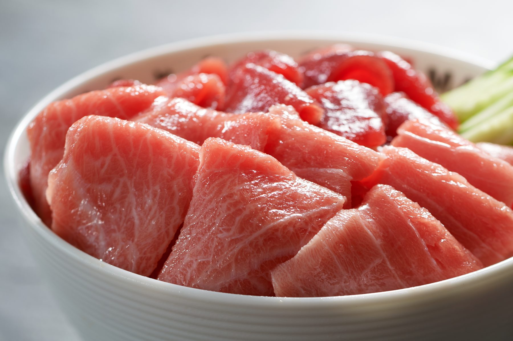
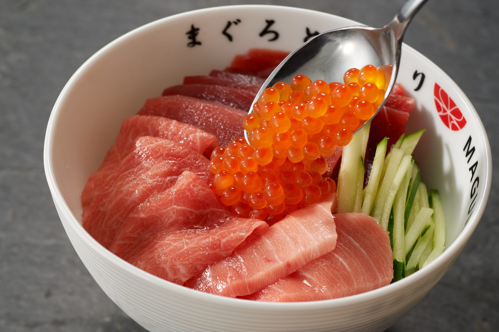
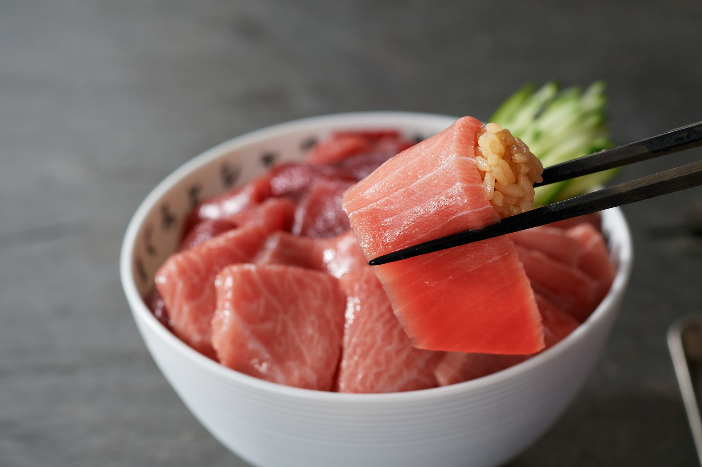
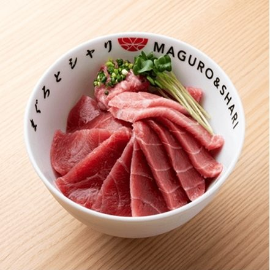
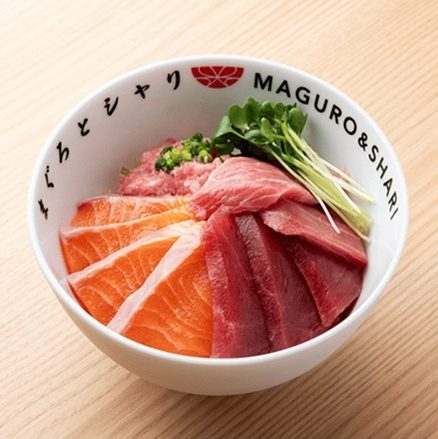

WILD BLUEFIN TUNA MEETS RED-VINEGAR RICE
MAGURO & SHARI is a tuna-bowl specialty restaurant supervised by Hiroyuki Sato, master chef of Hakkoku — one of Ginza's most sought-after sushi restaurants.
Driven by the wish to bring truly delicious food to more people, he distilled the essence of sushi — wild bluefin tuna and red-vinegar rice — into the casual form of a donburi bowl.
Since opening in Shibuya in October 2021, we have welcomed a steady stream of guests from around the world and the neighborhood alike.
"Sushi is a tool for making people happy. By serving truly delicious food in the casual style of a rice bowl, I hope MAGURO & SHARI brings one more smile into the world — nothing would make me happier."
Wild bluefin tuna, raised on fresh prey in cold open seas, carries a depth of fat and umami that farmed tuna simply cannot match. We pair it with authentic red-vinegar shari — a sushi master's craft and philosophy, served in a single bowl.
— FROM THE OWNER OF MAGURO & SHARI
WILD BLUEFIN — OTOROLean cuts concentrated with the tuna's pure umami. A quick dip in nikiri soy brings it into perfect harmony with our red-vinegar shari.
THE CLASSICWhere lean umami meets the rich fat of otoro — a cut that melts in the mouth and captures the true pleasure of bluefin.
RECOMMENDEDThe finest cut of wild bluefin, selected by a professional eye. Paired with red-vinegar shari, it becomes an exceptional bowl.
PREMIUM CUT
Indulgent with an ikura topping
Toro and shari — the perfect bite
MaguShari bowl
Tuna & salmon| ADDRESS | 2-chome, Shibuya, Shibuya-ku, Tokyo (About 5 min walk from Shibuya Sta., Miyamasuzaka side) |
| PHONE | +81-3-6820-1052 |
| HOURS | 11:00 – 21:00 (Open daily) |
| SEATS | Counter seating only ／ Non-smoking |
| ADDRESS | 3-chome, Meieki, Nakamura-ku, Nagoya, Aichi Inside the Dai Nagoya Building |
| HOURS | Lunch & dinner service (Please contact us for the latest information) |
| SEATS | Counter & table seating |
| ADDRESS | Asakusa area, Taito-ku, Tokyo (Please contact us for the latest information) |
| HOURS | Lunch & dinner service (Please contact us for the latest information) |
| SEATS | Counter seating only ／ Non-smoking |